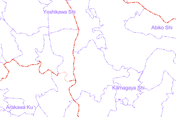
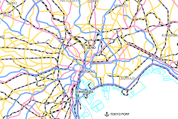
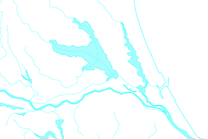
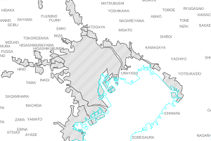
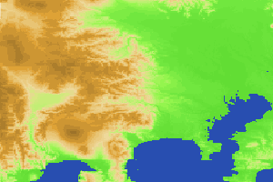
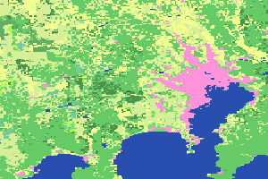
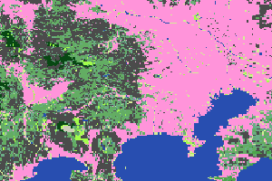
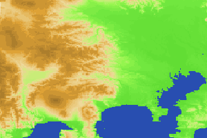
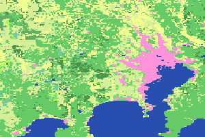
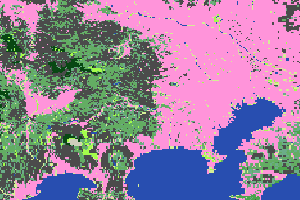

National / Regional version
Global Map data of National/Regional version were developed in line with Global Map Specifications. The data are in digital format at a scale of 1:1 million. Data of eight layers in total, four sets of vector data and four sets of raster data, were developed.
Vector Data
Boundary
Data on administrative boundary of each country and region. Information on the levels of administrative boundaries, i.e., international, primary level, and secondary level, names of administrative areas, and shapes of coastlines were developed.
Transport
Data on transportation, such as road, railroad, station and airport. In addition to their shapes, information on road types, station names and airport names were developed.
Drainage
Data on drainage, such as rivers and lakes. Information on their shapes and names was developed.
Population Centres
Data on built-up area including cities with large number of population. Names of cities and districts are included.
Raster Data
Elevation

Gridded data of elevation values
Land Use

Data classifying the status of use of land into 10 categories, such as forest and built-up area.
Land Cover

Data classifying the status of land cover into 20 categories in version 2, while 17 categories in version 1.
Vegetation

Data showing the green cover of land. Version 1 data have 25 categories according to the kinds of vegetation.
Elevation
Gridded data of elevation values
Land Use
Data classifying the status of use of land into 10 categories, such as forest and built-up area.
Land Cover
Data classifying the status of land cover into 20 categories in version 2, while 17 categories in version 1.
Vegetation
Data showing the green cover of land. Version 1 data have 25 categories according to the kinds of vegetation.
For the details of each data, please refer to Global Map Specifications.
Supplement
Global Map data of National/Regional version were developed with consistent specifications by NGIAs of respective countries and regions for fundamental geospatial information of their respective coverage by using geospatial information owned by them, and they were provided. The data have been authorized by NGIAs of respective countries and regions. Therefore, the contents of respective data are based on the views of respective data developers. For some countries and regions, there may be parts where data have not been developed.
National/Regional version of Global Map data was to be updated in about five-year cycle on the basis of resolutions of an ISCGM meeting. To know about the year data were updated and about data developers, please refer to metadata attached to each data.
Depending on the period the data were prepared, they were developed in line with two different specifications, namely, version 1 in VPF and BIL formats, and version 2 in GML and BIL formats.
National/Regional version of Global Map data were provided from this website or websites of respective countries and regions and they are available for download. For non-commercial use, in principle, anyone can use the data free or charge. In using the data, please check respective data policies because different countries and regions have different data policies.